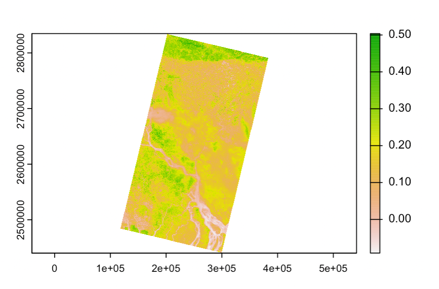

3 Corrections
3.1 Summary
3.2 Data Correction
Satellite data isn’t perfect, will have flaws and we need to fix it before we get into it, yuh.
3.2.1 Geometric Correction
Process of removing geometric distortions caused by factors such as sensor perspective (off nadir), terrain relief (hill v flat ground), Wind (on plane) and Earth’s curvature and rotation.


3.2.1.1 Solution
Ground Control Points (GPS) to match satellite images to a reference datasets — another map, GPS data etc, using regression.
- Forward Mapping: we have the xy in a correct image, xiyi in the uncorrected data, and change the data to it.
- but the point is randomly placed on the correct image — not ideal
- Backward Mapping: predicting the wrong image with the correct image — more accurate, QGIS.
- takes every point of the correct image and maps it onto the uncorrected image
RMSE and Resampling
Normally RMSE is set as 0.5, but you might want to add more GCPs to reduce RMSE.
During this, data might be slightly shifted → so must resample the final raster by aligning via the nearest neighbour, linear, cubic. But grid cells might not align due to resolution etc etc.
3.2.2 Atmospheric Correction
3.2.2.1 Mainly scattering & topographic attenuation
Adjacency Effect: reflective surfaces bleeds into other pixels caused by scattering, making the image hazy and reduces contrast.

When and when not to correct:
| Unnecessary | Necessary |
|---|---|
| Classification of a single image | Biophysical parameters needed (e.g. temperature, leaf area index, NDVI) |
| Independent classification of multi date imagery | Using spectral signatures through time and space |
| Single dates data | |
| Already Composited images |
BUT : Andy corrects it all anyway, just in case
3.2.2.2 Solution
Relative Correction
Take a really dark pixel ( often the ocean) so that it can be assumed that it does not reflect the atmosphere at all, and subtract it to each pixel as a baseline.
Psuedo Invariant Features (PIF)
- from different images to identify features that don’t change (carparks)
- take regression, where y is the base image, apply model.
- base model often is the middle one in time series.
Absolute Correction
- Change digital brightness values into a scaled surface reflectance via atmospheric radiative transfer models. This is done to the whole image
- But this is difficult to do bc needs a lot of data and money.
Empirical Line Correction
- Go out to the field at take measurements using a field spectrometer, but you need to be at the right time a place where the satellite is right above…
- This is also essentially done through linear regression
3.2.3 Orthorectification Correction
(Refer to glossary for terms)
Make things nadir. This would be used if satellite passes adjacent to a mountain top instead of directly above it.

Often uses cosine correction to calculate sun’s zenith and incidence angle
3.2.4 Radiometric Calibration
Satellites capture image brightness and is stored as Digital Number, which has no units and difficult to use!
Radiometric Calibration is converting DN to spectral radiance.
After all of that…
There is Landsat ARD - surface reflectance that is already corrected…
But it’s good to know anyway and not all data are ARD (drone images, v high resolution images)
3.3 Data Joining
3.3.1 Mosaicking
Says what it does on the can! Just like feathering and merging, we are joining 2 or more images together.
The images must have some overlapping, or else there’ll be gaps in your map. The overlapping will be dealt with through feathering (blending) so that seamlines are not visible.
Merging code:
m1 <- terra::mosaic(listlandsat_9i, listlandsat_9ii, fun="mean")3.4 Image Enhancement
To emphasize/exaggerate certain spectral traits. ### Contrast Enhancement
Different materials don’t reflect varying energy back — making it hard to differentiate between things. Images are also designed to avoid saturation in DN.
- Image stretching applied to DN
3.4.1 Ratio
Difference between 2 spectral bands that have a certain spectral response – making it easier to identify certain landscape features. This is the NDVI Index, index that refers to a specific item, and uses simple formula to get them.
Refer to Index Database/ for more!!
Here we’re extracting healthy vegetation Band 5 - Band 4 (red)
m1_NDVI <- (m1$LC09_L2SP_137043_20230126_20230128_02_T1_SR_B5 - m1$LC09_L2SP_137043_20230126_20230128_02_T1_SR_B4 ) / (m1$LC09_L2SP_137043_20230126_20230128_02_T1_SR_B5 + m1$LC09_L2SP_137043_20230126_20230128_02_T1_SR_B4)
m1_NDVI %>%
plot(.)
The greener, there more healthy vegetation there is. Since this is EO image of Dhaka (aka flood zone), vegetation is only present further to the north.
This is to filter out features that has higher NDVI score.
veg <- m1_NDVI %>%
terra::classify(., cbind(-Inf, 0.2, NA))3.4.2 Filtering
Filtering refers to any kind of moving window operation (zooming out) to our data, saved as a separate raster file, either low or high pass filters.
3.4.3 Texture
Use glcm package to select 8 texture measures.
- Can specify size of moving window here
- specify shift in co-occurency — if there are multiple shifts — will return mean for each pixel.
This will take 7-10mins!!
glcm <- glcm(band4_raster,
window = c(7, 7),
#shift=list(c(0,1), c(1,1), c(1,0), c(1,-1)),
statistics = c("homogeneity"))INSERT CODE
3.4.4 Data Fusion
append new raster data onto existing data OR merge several bands and make new easter dataset
Here: merging the texture measure (glcm) and the original raster
# for the next step of PCA we need to keep this in a raster (and not terra) format...
m1_raster <- stack(m1)
Fuse <- stack(m1_raster, glcm)3.4.5 PCA
reduce dimensionality of data!
To scale data, aka compare data that isnt measured in the same way (spectral bands 4 and 5) and textural data - use the scale function to standardise deviation.
To get the mean: use scale = FALSE We can also set the number of samples for PCA
library(RStoolbox)
Fuse_3_bands <- stack(Fuse$LC09_L2SP_137043_20230126_20230128_02_T1_SR_B4, Fuse$LC09_L2SP_137043_20230126_20230128_02_T1_SR_B5, Fuse$glcm_homogeneity)
scale_fuse<-scale(Fuse_3_bands)
pca <- rasterPCA(Fuse,
nSamples =100,
spca = TRUE)Here Comp 1 & 2 explains 0.81% of the variance. Often this is enough for analysis, so we extract only these 2.
This is the output of just layer 1.
3.5 A little about data format
Landsat data are collected in rows and paths made up of grids of images.
Data is are in tiers and levels.
Tier: Tier 1 denotes best quality, Tier 2 are good but with some clouds that affects radiometric calibration, covering GCPs.
Level: Level 1 is delivered through DN, Level 2 has surface reflectance and surface temperature, Level 3 are specific products ie Burned Area, surface water extent.